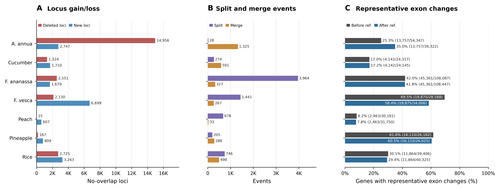

本文档总结当前项目中基因结构注释人工校准前后的比较算法、核心统计口径、最新运行结果和人工核验方式。
当前算法已经从原始 gene span 匹配切换为基于子特征的转录本级匹配。 基因对得分来自基因内最佳 before/after 转录本对，分母是单个转录本的 exon 总长度。
对已有清楚 1:1 锚点的重叠群，会过滤额外的弱桥接边，避免两个独立基因座因为少量尾部 exon/UTR 重叠被误归为 complex。
全部 7 个物种已重新运行；结果表、IGV tracks、跨物种主图和单物种图均已刷新。 验证脚本和单元测试通过。
菠萝区域 contig05:19,767,616-19,774,408 已作为定点检查案例：
当前输出为 g05902 -> lcfv2_06000 的 1:1 exon/UTR 边界调整，
以及 g05903 -> lcfv2_06001 的 1:1 exact，不再被误判为 complex。
读取 gene、mRNA/transcript、exon、CDS、UTR。
剔除没有显式 exon 或 CDS 证据的 mRNA；无有效 mRNA 的 gene 不参与 overlap。
UTR 只由 exon/CDS 推导；缺 exon 时只用 CDS 和显式 UTR 推断 exon。
同 seqid、同 strand 内，基因对得分取最佳转录本对的 exon overlap。
候选边构成 before/after 二部图，连通分量归为 1:1、split、merge、complex。
只对严格 1:1 基因对评估代表性转录本 exon/CDS/UTR/isoform 变化。
图示强调当前算法的核心：以单个转录本 exon 总长度作为 overlap 分母，先获得最佳转录本对，再在基因二部图中解析基因座事件； 对已被强 1:1 锚点解释的重叠群，低 CDS 支持、低 Jaccard 的额外桥接边会被过滤。
GFF 中的 gene feature span 可能过宽或不可靠，因此当前匹配不使用 raw gene span。
模型的 start/end 由真实子特征推导；原始 gene 边界保存在
before_gene_start/end 和 after_gene_start/end 中，仅用于审计。
当前关键定义如下。这里的 tx_length 是一个转录本 merged exon 区间的总长度，
不是 raw gene span，也不是一个 gene 内所有 isoform 合并后的长度。
tx_length(t) =
sum(length of merged exon intervals in transcript t)
tx_overlap_score(t_before, t_after) =
overlap(exons(t_before), exons(t_after))
/ min(tx_length(t_before), tx_length(t_after))
gene_pair_score(g_before, g_after) =
max(tx_overlap_score(t_before, t_after)
for all before/after transcript pairs)
采用 min() 作为分母后，较短转录本被较长转录本充分包含时会被视为强对应证据。
这符合“被包含就是被包含”的当前判断原则。
如果某一侧没有显式 exon，exon 只能由 CDS/UTR 下限推断。此时同时计算 CDS-to-CDS 的最佳转录本对 overlap。 由于 CDS 本身是 exon 的组成部分，CDS-only 注释不应因为另一侧补充了 UTR 或非编码 exon 而被稀释成未匹配。
containment/min-denominator 策略会更容易保留包含式重叠，但在相邻基因存在 UTR 或 exon 尾部接触时， 也可能把两个本来已经能两两对应的基因座连成一个 complex。当前剪枝规则为：
| 指标组 | 问题 | 计算口径 | 主图位置 |
|---|---|---|---|
| Locus gain/loss | 校准前后有没有这个基因座？ | 不看链向，不用 0.5 阈值；只统计新旧注释完全没有任何子特征重叠的 after/before gene。 | Panel A |
| Split/Merge | 不是 1:1 的对应关系有多少？ | 二部图连通分量中 1:N 记 split，N:1 记 merge；按事件计数，不按转录本重复计数。 | Panel B |
| Rep exon change | 确定 1:1 的基因中代表性转录本 exon 是否改变？ | before 取 primary mRNA；after 取与 before primary 最相似的 mRNA。exon 数量变化或 exon 坐标变化均计入。 | Panel C |
| Audit fields | CDS、isoform、strict unmatched 如何审计？ | 保留在 CSV 和 change log 中；CDS phase 完全忽略。summary 中 novel/deleted 字段为 strict unmatched，不等同于生物学新生或删除基因。 | 表格与 IGV track |
当前主图不再单独设置 Panel D。CDS 和 paired delta 仍保留在
results/curation_core_metrics.csv、results/single_species/* 和
results/locus/*_change_log.csv 中，作为人工审阅与追溯字段。
下表来自最新的 results/locus/*_change_summary.csv 与
results/curation_core_metrics.csv。百分比中的 Panel C 以校准前/后总 gene 数为分母，
表示严格 1:1 基因中代表性转录本 exon 变化占前后注释规模的比例。
| Species | Before genes | After genes | 1:1 | Exact | No-overlap new | No-overlap deleted | Split | Merge | Complex | Rep exon changed | Before ref. | After ref. | Pruned bridges |
|---|---|---|---|---|---|---|---|---|---|---|---|---|---|
| A. annua | 54,347 | 39,322 | 34,444 | 18,932 | 2,747 | 14,956 | 28 | 1,325 | 38 | 13,757 | 25.3% | 35.0% | 41 |
| Cucumber | 24,317 | 24,145 | 20,523 | 16,381 | 1,710 | 1,324 | 274 | 591 | 12 | 4,142 | 17.0% | 17.2% | 1 |
| F. ananassa | 108,087 | 108,447 | 96,298 | 50,854 | 1,679 | 2,551 | 3,964 | 327 | 175 | 45,361 | 42.0% | 41.8% | 292 |
| F. vesca | 28,588 | 34,006 | 22,873 | 2,835 | 6,699 | 2,130 | 1,441 | 267 | 23 | 19,875 | 69.5% | 58.4% | 4 |
| Peach | 30,181 | 31,750 | 29,305 | 26,561 | 607 | 15 | 678 | 33 | 3 | 2,463 | 8.2% | 7.8% | 2 |
| Pineapple | 26,162 | 26,625 | 24,870 | 8,759 | 809 | 167 | 205 | 288 | 23 | 16,110 | 61.6% | 60.5% | 228 |
| Rice | 39,406 | 40,325 | 32,478 | 17,415 | 3,263 | 2,725 | 746 | 498 | 449 | 11,864 | 30.1% | 29.4% | 40 |

最新跨物种主图：Panel A 显示无重叠新增/删除基因座；Panel B 显示 split/merge 事件； Panel C 显示严格 1:1 代表性转录本 exon 变化相对校准前/后总 gene 数的比例。
当前已经为每个物种导出 IGV 友好的 BED、GFF3 和 TSV track。推荐在 IGV 中同时加载：
before GFF、after GFF、以及对应的 results/tracks/{Species}_annotation_changes.bed
或 .gff3。
| 文件 | 用途 |
|---|---|
results/tracks/*_annotation_changes.bed |
适合快速在 IGV 中浏览事件区间，颜色按 syntenic/split/merge/complex/strict unmatched 区分。 |
results/tracks/*_annotation_changes.gff3 |
保留事件属性，适合在 feature tooltip 中查看 before/after gene、match type 和 subtype。 |
results/tracks/*_annotation_changes.tsv |
用于按坐标、基因 ID 或事件类型过滤，适合批量抽查。 |
Species: Pineapple Region: contig05:19,767,616-19,774,408 g05902 -> lcfv2_06000 syntenic exon_boundary_refined_utr_added g05903 -> lcfv2_06001 syntenic exact
这个区域用于验证“已有两个转录本清楚两两对应时，其他弱重叠关系应被过滤”的逻辑。 当前结果符合预期。
python -m unittest discover -s tests Ran 50 tests OK
python validate_results.py Integrity checks: OK
额外检查还包括：git diff --check 无空白错误；
每个物种的 change_log.csv 行数与导出的 BED/GFF3/TSV track 行数完全一致。
计数闭合关系已经通过：每个物种的 before gene 与 after gene 都能被分配到 1:1、split、merge、complex、unresolved overlap、strict unmatched 中的某一类。
| 路径 | 说明 |
|---|---|
locus_compare.py | 核心比较算法实现。 |
results/locus/*_change_summary.csv | 每个物种的总体统计和分类计数。 |
results/locus/*_change_log.csv | 逐事件 before/after gene 对、坐标、match type 和 subtype。 |
results/curation_core_metrics.csv | 主图使用的跨物种核心指标表。 |
figures/curation_core_metrics_publication.png | 当前推荐使用的跨物种三 Panel 主图。 |
figures/*_ABCD_single_species.png | 每个物种的单独审阅图，包含数量、基因座归类、1:1 结构变化和审计型 paired delta。 |
docs/locus_compare_algorithm.html | 更完整的算法说明。 |
docs/curation_core_metrics_figure_algorithm.html | 当前 A/B/C 核心图的专门说明。 |
novel_genes 和 deleted_genes 是为了兼容已有结果表。
本文档为当前项目状态的汇总。详细实现见 locus_compare.py，
更细的算法说明见 docs/locus_compare_algorithm.html。